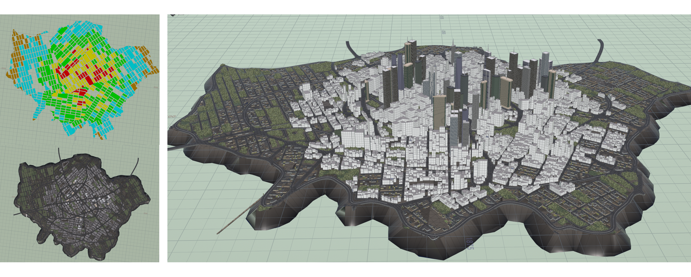

I enjoy learning various technologies and developing games. I'm always enthusiastic on learning, building new skills, and bringing ideas to life.
Unreal Engine 5
Unity Engine
C++
C#
DirectX 11
Python
Git
My Work
UE5
Houdini
Extreme Sports Game (2025)
A collaborative development project where I was responsible for level design and generation, as well as core gameplay implementation.
C++
Blender
2D Pixel Mecha Shooter (2024)
Fully implemented a 2D dual joystick shooter in C++ for the Warwick University Game Jam, including custom NPC data, a data-driven map, collision detection, and animations.

UE5
Houdini
PCG City Generator (2024-2025)
Developed a PCG city generator based on Houdini for my graduation project. It supports custom city zoning, roads, visualized parameter panel, and external asset import.
C++
DirectX 11
Basic Ray Tracing Renderer (2024)
Implemented core rendering functions like PBR and path tracing, along with the GGX microfacet model, importance sampling, and adaptive sampling.
C++
DirectX 11
3D Game Rasterization Engine (2024)
Developed a basic 3D engine using C++/DirectX 11, implementing key rendering features like deferred shading, skeletal animation, and collision detection.
Unity3D
Unity3D Survival Game "Seed of Eden" (2022)
Implemented core game systems for a survival game, including item management, combat, crafting, and building systems.
Education
Master of Science, Game Engineering
University of Warwick
Sept 2024 - Sept 2025
- C++, Computer Graphics, Game Development
Bachelor of Science, Computer Science
Hong Kong Baptist University
Sept 2020 - Jul 2024
- Operation System, Data Structure and Algorithm
Professional Experience
IT Department Intern
BMW Brilliance Automotive
Jul 2022 - Oct 2022
- Contributed to the 6th update of the internal JOYCHAT application's bus route module (launched Aug 1st).
Get in Touch
I'm always open to new opportunities, collaborations, and conversations. Feel free to reach out!